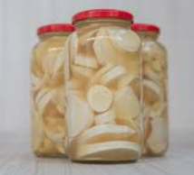

Jolly Foods nace en el corazón de Santander, Colombia. Somos el puente entre 300+ familias agricultoras y los mercados más exigentes de Europa, USA y Asia.
No somos intermediarios. Somos socios estratégicos. Acompañamos cada cosecha, garantizamos trazabilidad total y pagamos precio justo. Porque cuando el origen gana, tu negocio gana.
“Calidad sin atajos. Sostenibilidad sin excusas.”
NUESTRO CATÁLOGO
▶ LÍNEA PALMITO PREMIUM

Palmito en Conserva Clásico
Corazones tiernos en salmuera natural. Textura firme y sabor suave. 400g. Ideal ensaladas.
$12
Palmito Premium Entero
Selección de los mejores tallos enteros. Sin fibra. Empaque al vacío. 500g. Línea HORECA.
$15
Palmito en Rodajas
Corte uniforme 8mm. Listo para servir. Perfecto para pizzas, pastas y canapés. 300g.
$10
▶ LÍNEA PIÑA DORADA MD2
Zumo de Piña 100% Natural
NFC sin azúcares añadidos. Pasteurizado en frío. Brix 14-16°. Botella PET 1L.
$8
Rodajas de Piña en Almíbar
Rodajas enteras en almíbar ligero. Lata 565g. Color dorado uniforme. Premium.
$9
Crunchyroll de Piña Deshidratada
Snack crujiente 100% fruta. Sin azúcar. Deshidratado a baja temperatura. 50g.
$6
CAFÉ GOURMET
La Historia: De la Finca La Esperanza a tu Taza
Todo empezó en 2008 cuando Don Alberto, caficultor de 3ra generación en Huila, nos dijo: "Mi café se vende como commodity, pero sabe a gloria". Decidimos cambiar eso.
Hoy trabajamos con 120 fincas entre 1500 y 2100 msnm. Instalamos laboratorios de catación en origen, capacitamos en procesos post-cosecha y pagamos hasta 40% sobre bolsa NY.
NUESTRAS 8 VARIEDADES DE ORIGEN
Haz clic en cada variedad para desplegar ficha técnica completa
1. GEISHA
Sierra Nevada - 2000msnm
SCA 90+Premium
Notas de Cata:
Bergamota, mango maduro, floral intenso, té Earl Grey, jazmín, papaya, miel de acacia. Acidez cítrica elegante tipo limón Meyer. Dulzura etérea con final prolongado a flores blancas que permanece más de 60 segundos en boca. Cuerpo sedoso tipo té de jazmín.
Perfil Técnico:
Altura: 2000-2100 msnm | Proceso: Lavado experimental con levaduras nativas aisladas de la finca | Varietal: Geisha panameña adaptada a Colombia | Cosecha: Noviembre-Febrero | Cuerpo: Etéreo, sedoso, té-like | Acidez: Cítrica alta brillante | Humedad: 11.2% | Densidad: 820 g/L | Defectos: 0
Características:
La variedad más exclusiva y cara del mundo. Solo 5 sacos de 35kg disponibles por año. La altura extrema combinada con el microclima de montaña costera de la Sierra Nevada produce un perfil floral-terpénico inigualable en el mundo. Cultivo bajo sombra de guamos nativos. Fermentación anaeróbica controlada 48h en tanques de acero inoxidable. Secado lento 25 días en camas elevadas bajo techo. Precio FOB: $50-80 USD/lb verde. Solo bajo reserva anual con contrato de compra anticipada. Ideal para competencias de barismo WBC, tostadores de élite y cafeterías de lujo. Perfil usado por campeones mundiales.
2. VILLA SARCHÍ
Costa Rica adaptado - 1700msnm
SCA 86+Especialidad
Notas de Cata:
Cítricos dulces, mandarina, caramelo rubio, chocolate con leche, nuez tostada, miel de caña, acidez brillante balanceada. Final limpio y dulce prolongado con notas a almendra y caramelo.
Perfil Técnico:
Altura: 1600-1800 msnm | Proceso: Lavado tradicional con doble fermentación 24h + 12h | Varietal: Villa Sarchí | Cosecha: Mayo-Octubre | Cuerpo: Medio, cremoso | Acidez: Media-alta | Tueste: Medio recomendado | Solubilidad: Alta
Características:
Variedad costarricense adaptada exitosamente a Santander con 15 años de adaptación genética. Balance perfecto entre dulzor y acidez que la hace muy versátil para espresso y filtrados V60, Chemex, Aeropress. Resistente a roya, producción estable año tras año. 25 sacos de 70kg/año disponibles. Perfil comercial premium ideal para tostadores specialty que buscan consistencia y diferenciación. Certificable Rainforest Alliance. Excelente para blend de cafeterías specialty.
3. KENIA
SL28/SL34 - 1800msnm
SCA 87+Exótico
Notas de Cata:
Grosella negra, vino tinto, tomate seco, tamarindo, ciruela pasa, acidez fosfórica brillante vibrante, cuerpo jugoso tipo jugo de frutas rojas. Final vinoso complejo con notas a uva fermentada.
Perfil Técnico:
Altura: 1700-1900 msnm | Proceso: Lavado doble fermentación estilo keniano 36h + 12h sin agua | Varietal: SL28 60%, SL34 40% africanos | Cosecha: Junio-Diciembre | Cuerpo: Jugoso, denso | Acidez: Alta vibrante | pH: 4.8 | Tueste: Medio-claro
Características:
Varietales africanos adaptados a Colombia que replican el perfil salvaje y frutal único de los mejores Kenia AA de Nyeri. La fermentación sin agua, solo con el mucílago del café, concentra los ácidos y desarrolla el perfil característico de grosella y tomate. Solo 15 sacos/año. Buscado por tostadores de competencia y cafeterías de tercera ola. Precio premium $35-45 USD/lb. Cupping score promedio 87.2. Ideal para filtrados que resalten acidez.